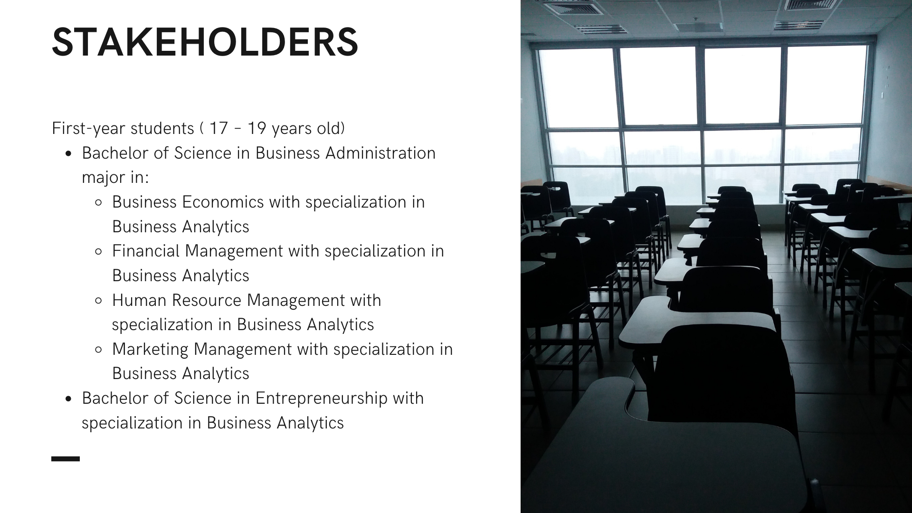

Course Overview
During the academic school year 2020-2021 and 2021-2022, I was fortunate enough to have created and converted course materials such as the syllabus, electronic learning packets/modules, video lectures, tutorials, and assessments for the subject BA 211 - Fundamentals of Business Analytics of Saint Louis University.
The course introduced business analytics concepts related to management science and operations research. BA 211 provided the students with an overview of the current business analytics trends that drive today's businesses. The course equipped an understanding of data management techniques that can help an organization to achieve its business goals and address operational challenges. And finally, this course introduced the use of statistical methods and models and empirical data to support business decision-making.
Tools used
Microsoft Excel or Google Sheets, R and RStudio.
Module and Unit Topics
Module 1: Introduction to Business Analytics
- This aims to define and explain the importance and value of data analytics in the business profession
Module 2: Data warehousing
- This aims to analyze and manage business data using the concepts of data warehousing
Code used can be seen in my Github GitHub
Module 3: Descriptive Analytics
- This aims to use descriptive analytics to analyze business status and progress and apply different data visualization tools based on its characteristics and application.
Module 4: Predictive Analytics: Classification Analysis
- This aims to identify and apply the use of classification analysis in business decision making.
Code used can be seen in my Github: Churn using R GitHub
Module 5: Predictive Analytics: Regression and Time series Analysis
- This aims to identify and apply the use of classification analysis in business decision making.
Code used can be seen in my Github: Linear Regression in R GitHub
Module 6: Predictive Analytics: unsupervised learning and data mining
- This aims to apply data mining strategies to recognize relevant business patterns for predictive analytics.
Code used can be seen in my Github: Codes used in the lecture GitHub
Module 7: Prescriptive Analytics
- This aims to explain the concepts of prescriptive analytics for business optimization.
Module 8: Ethical Issues in Business Analytics
- Discuss the ethical norms as required under policies and applicable laws governing confidentiality and non-disclosure of data/information/documents and proper conduct in the learning process and application of business analytics.